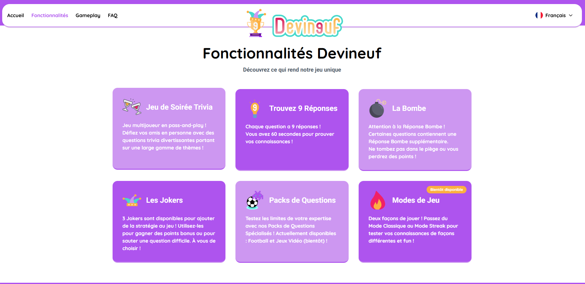
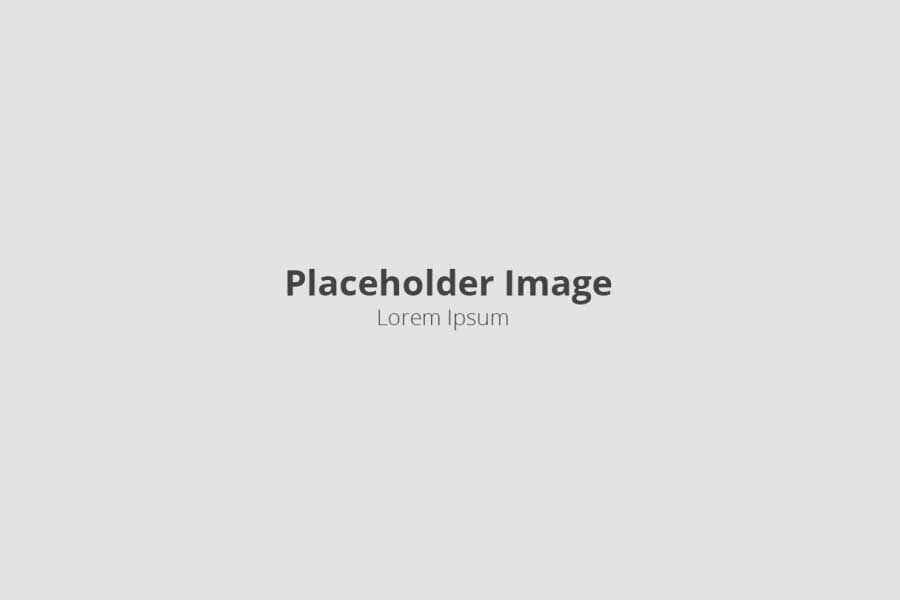
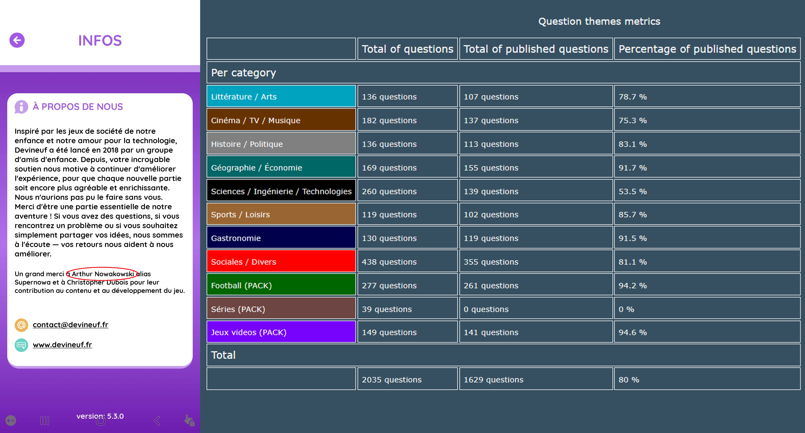

Contexte du projet
Devineuf est un jeu mobile de quiz de culture générale en multijoueur local, dont le but est d'obtenir le meilleur score en trouvant pour chaque question jusqu'à 9 réponses valides pouvant donner entre 1 et 5 points selon la difficulté.
Le jeu existait déjà lorsque je l'ai découvert en y jouant avec des amis en 2023, mais étant un grand fan de quiz et ayant rapidement eu de nouvelles idées de questions et de fonctionnalités, j'ai rejoint le serveur discord dédié à l'application et ai commencé à les proposer aux développeurs.
À force de proposer toujours plus de questions et d'améliorations, j'ai fini par sympathiser avec l'équipe de développement et l'ai rejoint en tant que content designer, ceux-ci m'ayant donné accès à la plateforme d'administration du jeu.

Contraintes et Objectifs
L'objectif principal ici est de créer des questions accessibles, variées, et intéressantes à jouer, en jonglant entre culture générale pure et fun, tout en évitant les doublons, ce qui nuirait à l'expérience utilisateur si 2 questions trop similaires apparaissaient malencontreusement dans une même partie.
Le nombre de thématiques abordées dans le jeu étant régulièrement augmenté, il est également important de contribuer à compléter et étoffer les thèmes récemment créés et publiés, comme ce fut le cas pour le pack "Jeux vidéo", afin d'obtenir une quantité suffisante de questions pour éviter aux joueurs de tomber trop rapidement sur des questions déjà jouées.
De manière évidente, l'équilibrage est aussi primordial lors de la rédaction de nouvelles questions : les questions trop pointues ou floues sont donc à éviter, pour qu'un joueur moyen puisse tout de même obtenir quelques points à chaque manche.
Par ailleurs, la distribution de points par réponse doit également être logique : les réponses faciles voire évidentes valent 1 point, les réponses corsées et nécessitant plus de réflexion en valent 5, et les réponses d'un niveau intermédiaire sont à 2 points.

Inspirations
Afin de créer des questions, le plus important est d'abord de jouer au jeu afin de comprendre comment il fonctionne et de s'imprégner des questions existantes afin de s'en inspirer.
L'avantage de ce jeu est qu'il n'y a jamais une seule réponse possible, et donc qu'il est possible de créer des questions amusantes ne nécessitant pas de réponse stricte, mais plutôt de logique ou ayant une grande probabilité d'être citées, un peu à la manière du célèbre jeu "Une famille en Or", dont j'ai pu m'inspirer pour certaines questions.
Ainsi, une situation de tous les jours peut devenir une question originale, à condition bien sûr qu'il y ait suffisamment de réponses logiques à trouver (minimum 9 donc), et en répartissant les points de manière à ce que les réponses plus évidentes rapportent moins de points que celles plus réfléchies (1 point pour les réponses simples, 2 pour les réponses intermédiaires et 5 pour les difficiles).
Pour les thématiques plus orientées culture, je m'inspire cette fois de mes passions et mes connaissances actuelles. Les animaux, les jeux vidéo ou la science sont par exemple des thèmes que j'ai pu compléter aisément.
Itérations et Tests
Avant de retrouver mes dernières propositions de questions sur l'application, celles-ci doivent être validées par l'équipe de développement, et il arrive que nous discutions de la formulation ou du contenu de certaines d'entre elles si cela ne leur plaît pas totalement.
Lorsque cette étape est passée et que les nouvelles questions sont publiées via une mise à jour, les joueurs peuvent alors les découvrir et les tester directement en jeu, nous permettant de voir différentes statistiques utiles afin de connaître la difficulté réelle des questions proposées.
De mon côté j'essaye également de tester les nouvelles versions quand j'en ai la possibilité, afin de vérifier qu'il ne reste pas de coquille passée sous les radars, d'ambiguïté ou de répartition de points, auquel cas je les corrige et les signale rapidement aux développeurs pour préparer une mise à jour suivante.

Résultats
À ce jour, j'ai ainsi pu ajouter près de 400 nouvelles questions à la base de données, et j'ai par exemple pu remplir près de 80% du pack additionnel "Jeux Vidéo", créé récemment pour élargir le public cible en visant des joueurs plus jeunes.
Cela m'a notamment valu d'être cité dans les crédits du jeu, et d'autres thèmes et packs de questions sont également en préparation avec ma collaboration, afin de diversifier toujours plus le panel de questions du jeu.
